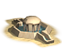
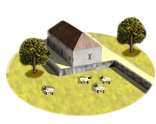
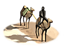
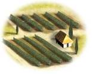
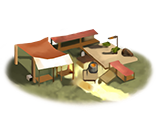
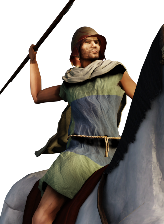
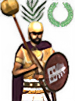
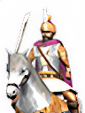
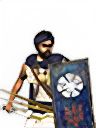

RTR: Imperium Surrectum
RTR: Imperium SurrectumAlexandreia-Kaukasia
← all settlements · all regions · wiki index
The settlement of the region of Kapisene, held at the campaign start by Indians (Indian).
Size: City · Population: 2,100 · Buildings: 13
What is already built
| Building chain | Level | Building chain | Level | Building chain | Level | Building chain | Level | ||||
|---|---|---|---|---|---|---|---|---|---|---|---|
| core building | Governor's Palace | defenses | Small Stone Wall | governmentA | Dependency |  | health | Sewers (Sanitation) | |||
 | highland pastoralism | Highland Pasturing (Husbandry) | hinterland region | Region Information Scroll | hinterland roads | Roads | market | Local Market | |||
| military industrial complex | Basic Armoury |  | silk trader | Silk Trader (Urban) |  | wine industry | Vineyard (Rural) |  | jewelry | Jewellery Crafter (Industry) | |
| temples standard | Temple |
What can be recruited here
| Unit | Raised at | Cost | Upkeep | Unit | Raised at | Cost | Upkeep | Unit | Raised at | Cost | Upkeep | |||
|---|---|---|---|---|---|---|---|---|---|---|---|---|---|---|
| Akontistai | Region Information Scroll | 898 | 329 | Greek Archers | Region Information Scroll | 1,197 | 438 | Greek Hoplites | Region Information Scroll | 1,607 | 588 | |||
| Greek Peltasts | Region Information Scroll | 1,157 | 423 | Greek Slingers | Region Information Scroll | 1,080 | 395 |  | Prodromoi | Region Information Scroll | 1,338 | 539 |
16 more units once the building is up — greyed out, with what each needs.
16 units this settlement raises once you build for them
| Unit | Once you have | Cost | Upkeep | Unit | Once you have | Cost | Upkeep | Unit | Once you have | Cost | Upkeep | |||
|---|---|---|---|---|---|---|---|---|---|---|---|---|---|---|
| Indian Archers | Homeland | 1,116 | 408 | Indian Cavalry | Homeland | 1,814 | 730 |  | Indian Elite Guard | Homeland | 1,905 | 697 | ||
 | Indian General's Bodyguard | Homeland | 4,200 | 63 | Indian Heavy Infantry | Homeland | 1,589 | 582 | Indian Javelinmen | Homeland | 785 | 287 | ||
| Indian Lancers | Homeland | 2,172 | 874 | Indian Levy Spearmen | Homeland | 1,308 | 479 | Indian Light Cavalry | Homeland | 1,354 | 545 | |||
| Indian Longbowmen | Homeland | 1,169 | 428 | Indian Peltasts | Homeland | 990 | 362 | Indian Spearmen | Homeland | 1,380 | 505 | |||
 | Indian Swordsmen | Homeland | 1,405 | 514 |
| Unit | Once you have | Cost | Upkeep | Unit | Once you have | Cost | Upkeep | |||||||
|---|---|---|---|---|---|---|---|---|---|---|---|---|---|---|
| Ballistas | Armourer (Industry), Foundry (Industry) | 1,753 | 642 | Lithoboloi | Armourer (Industry), Foundry (Industry) | 2,533 | 927 |
| Unit | Once you have | Cost | Upkeep | |||||||||||
|---|---|---|---|---|---|---|---|---|---|---|---|---|---|---|
| Large Lithoboloi | Foundry (Industry) | 3,073 | 1,125 |
The land around it
Terrain, climate, fertility, water, port, the trade goods placed inside the borders, and the recruitment zones and homeland this ground counts as, are all on Kapisene — stated there once, so the two pages cannot disagree.